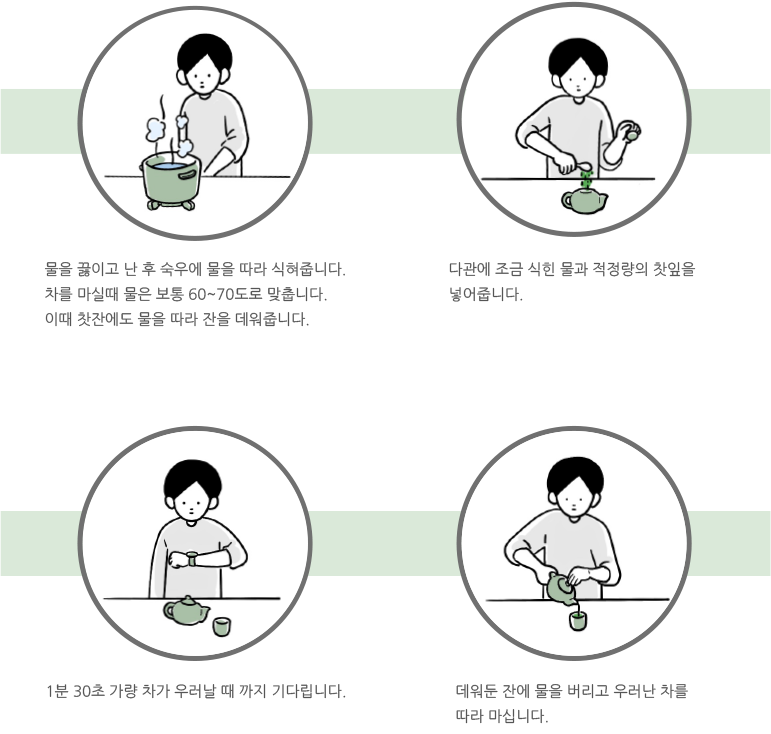

다도에서 가장 중요한 것은 우리는 시간, 차의 양, 그리고
물의 양과 온도입니다. 시간, 차, 물 이 세가지의 조화가 적절하게
이뤄져야 더욱 차를 맛있게 즐길 수 있습니다.
잎차로 차를 우리기 위해선 필요한 다기와 조건을
갖추는 것이 좋습니다.
다기세트
숙우는 끓인 물을 식히기 위해 사용하는 다기입니다. 차는 너무 뜨거운 물로 우리면 쓴 맛이 강해지기 때문에
60~70도 정도로 식혀서 차를 우려야 본연의 맛을 잘 느낄 수 있습니다. 다관은 차를 우릴 때 쓰는 것이고
1분에서 1분 30초 가량 차를 우리고 나면 잔에 따라 마십니다. 잎차를 보관할 때는 다호라는 통에 잎차를 담아
햇빛과 공기에 오염되지 않게 합니다. 다기를 구비할 때는 도자기로 된 것을 고르길 권장합니다.
도자기로 된 다기는 차가 빨리 식는 것을 막아줘 오랜 시간 따뜻한 차를 마실 수 있게 도와줍니다.
기본방법

주의사항
한번 끓인 물 다시 가열해 차를 우리게 되면 물 속에 용존산소가 부족해지면서 차의 맛을 저하시킵니다.
용존산소는 차 맛을 내는데 중요한 역할을 해 제 때 물을 가열하는 것이 좋습니다.
지하수와 같은 경수를 사용하게 되면 물속 성분이 차 성분과 화학 작용 일으켜 찌꺼기 만들어 냅니다.
차 속 카페인은 1분 이내에 용출되고, 항산화 작용을 하는 폴리페놀이 용출되기까지는 조금 더 시간이 필요합니다.
차를 우린지 3분 이상이 지나면 분자량 큰 탄닌이 용출돼 쓴 맛이 강해지기 때문에 너무 오래 우려내는 것을
권하지 않습니다.